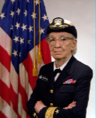
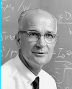
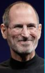
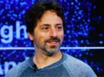

9 december 1906

Grace Hopper
Grace hopper was een Amerikaanse wiskundige. Informaticus, Natuurkundige en officieer van de Amerikaanse marine.Zij heeft de eerste programma´s voor de Mark calculator en de eerste echte compiler voor een programmeertaal op haar naam staan.
13 februari 1910

William Shockley
William Shockley is een Brits/Amerikaanse natuurkundige en is mede-uitvinder van de transistor met John Bardeen en Walter Brattain, waarvoor hij de nobelprijs voor de natuurkunde in 1956 kreeg.3 januari 1929

Gordon Moore
Gordan Moore is een Amerikaanse ondernemer en medeoprichter van het bedrijf Intel.11 augustus 1950
Steve Wozniak
Steve Wozniak was verantwoordelijk voor de eerste versies van het besturingssysteem en de hardware van de Apple I en de beroemde Apple II24 februari 1955

Steve Jobs
Steve Jobs was de medeoprichter en topman van het bedrijf Apple28 oktober 1955
Bill Gates
Bill gates is een Amerikaanse ondernemer. Hij is vooral bekend geworden als medeoprichter van het bedrijf Microsoft.6 augustus 1963
Kevin Mitnick
Kevin Mitnick is een van de bekenste veroordeelde hacker.6 juni 1967
Rich Skrenta
Rich Skrenta is een Amerikaanse computerprogrammeur en ondernemer uit Silicon Valley en heeft de Brello uitgevonden28 december 1969
Linus Torvalds
Linus Torvalds is een Fins/Amerikaans informaticus, die het bekenst is vanwege de ontwikkeling van de Linuxkernel en daar nog steeds coördinator van is.26 maart 1973
Larry Page
Larry Page, is een van de oprichters van Google, een bedrijf dat startte met een zoekmachine op internet samen met Sergey Brin21 augustus 1973

Sergey Brin
Sergey Brin is ook een van de oprichters van google en zit zelf in de top 15 rijkste mensen in de wereld en heeft het samen gedaan met Larry Page24 januari 1977
Chad Hurley
Chad Hurley is een Amerikaanse ondernemer en voormalig directeur van de videowebsite Youtube die hij in 2005 heeft opgericht25 augustus 1978
Steve Chen
Steve chen is een Taiweense-Amerikaanse internetondernemer die voormalig chief technologie officieer van de website voor het delen van video's youtube28 oktober 1979
Jawed Karim
Jawed Karim is een internetondernemer van duitste oorsprong en medeoprichter van Youtube. Hij heeft ook de eerste video geupload op de website14 mei 1984